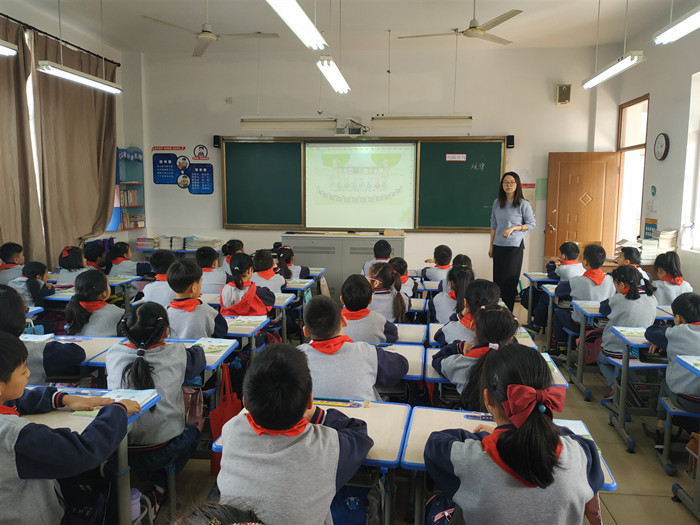

鞍山市铁东区胜利小学欢迎您！
首页 > 详情信息
习总书记在一带一路高峰会议上说：“我们要聚焦重点，深耕细作，共同绘制精谨细腻的‘工笔画’”。在现如今教科研训一体化的大背景下，每一位普通教师都要有既是传道授业解惑者，又是学习科研探究者。而课题研究内容全面，方式渐进，动力内驱，能促进教师在研究中常反思，反思后促改变，生发出新的思想，是极具实效性的探究，是教师成长拔节的关键。
10月22日，朝阳小学承办了教科一片“苏州市规划课题结题成果展示活动”。活动中，九位青年教师带着自己的教育思考与探究，为大家呈现了一堂堂生动精彩的课例，获得了一致好评。
一、课堂展示 展现魅力
【语文青年教师执教展示课】

【数学青年教师执教展示课】

【英语青年教师执教展示课】
【美术青年教师执教展示课】
研讨交流 彰显智慧
【苏州市规划课题结题成果展示】
课题研究就是在教育教学的图纸上，绘制色彩缤纷而又极具深度的画卷。在聆听各位青年教师的精彩授课后，课题研究主持人，各校教科主任、专家齐聚我校会议室，由教师发展中心教科员袁干斌主持了各校规划课题结题的成果展示活动。
实验小学副校长孙希、德育主任许春霞和朱琳老师分别就苏州市教育科学“十三五”规划课题《核心素养观下智慧教育的实践研究》《亲子有效沟通的探索与研究》《苏式教育下的小学英语高效学习生活化的研究》做结题汇报交流。
各教科主任、专家用心聆听，积极展开交流探讨
活动最后，袁主任对如何讲课题是实践性成果转化成理论性成果，让经验得到推广，让智慧得以分享做了强调，也期望教育科研在促进自身教育教学不断发展的同时能，形成辐射，惠及更多教育同人。
处处留心皆学问，立足一线教学，在课题研究中丰富专业智慧，提升专业技能，增强思维品质，让结束成为开始，照亮前进的道路！